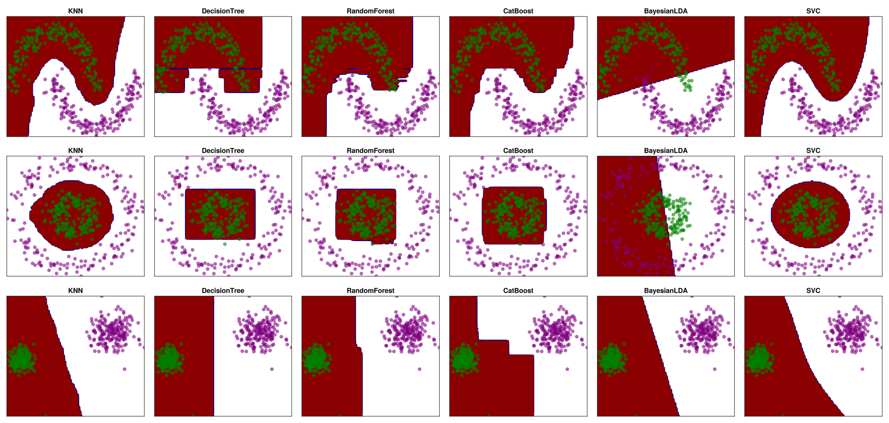

import MLJ:predict,predict_mode
using MLJ,GLMakie,DataFrames,Random
Random.seed!(1222)TaskLocalRNG() import MLJ:predict,predict_mode
using MLJ,GLMakie,DataFrames,Random
Random.seed!(1222)TaskLocalRNG() function circle_data()
X, y = make_circles(400; noise=0.1, factor=0.3)
df = DataFrame(X)
df.y = y
return df
end
function moons_data()
X, y = make_moons(400; noise=0.1)
df = DataFrame(X)
df.y = y
return df
end
function blob_data()
X, y = make_blobs(400, 2; centers=2, cluster_std=[1.0, 2.0])
df = DataFrame(X)
df.y = y
return df
end
#cat=df1.y|>levels|>unique
colors=[:green, :purple]2-element Vector{Symbol}:
:green
:purplefunction plot_origin_data(df)
fig=Figure()
ax=Axis(fig[1,1])
local cat=df.y|>levels|>unique
local colors=[:green, :purple]
for (i,c) in enumerate(cat)
d=df[y.==c,:]
scatter!(ax, d[:,1],d[:,2],color=(colors[i],0.6))
#@show d
end
fig
end
nums=100
function boundary_data(df,;n=nums)
n1=n2=n
xlow,xhigh=extrema(df[:,:x1])
ylow,yhigh=extrema(df[:,:x2])
tx = LinRange(xlow,xhigh,n1)
ty = LinRange(ylow,yhigh,n2)
x_test = mapreduce(collect, hcat, Iterators.product(tx, ty));
x_test=MLJ.table(x_test')
return tx,ty,x_test
end
function plot_desc_boudary(fig,ytest,i;df=df1,row=1)
tx,ty,xs,ys, xtest=boundary_data(df)
local ax=Axis(fig[row,i],title="$(names[i])")
contourf!(ax, tx,ty,ytest,levels=length(cat),colormap=:phase)
for (i,c) in enumerate(cat)
d=df[y.==c,:]
scatter!(ax, d[:,1],d[:,2],color=(colors[i],0.6))
end
hidedecorations!(ax)
endplot_desc_boudary (generic function with 1 method) using CatBoost.MLJCatBoostInterface
SVC = @load SVC pkg=LIBSVM
KNNClassifier = @load KNNClassifier pkg=NearestNeighborModels
DecisionTreeClassifier = @load DecisionTreeClassifier pkg=DecisionTree
RandomForestClassifier = @load RandomForestClassifier pkg=DecisionTree
CatBoostClassifier = @load CatBoostClassifier pkg=CatBoost
BayesianLDA = @load BayesianLDA pkg=MultivariateStats
Booster = @load AdaBoostStumpClassifier pkg=DecisionTree
models=[KNNClassifier,DecisionTreeClassifier,RandomForestClassifier,CatBoostClassifier,BayesianLDA,SVC]
names=["KNN","DecisionTree","RandomForest","CatBoost","BayesianLDA","SVC"]
function _fit(df::DataFrame,m)
X,y=df[:,1:2],df[:,3]
_,_,xtest=boundary_data(df;n=nums)
local predict= m==MLJLIBSVMInterface.SVC ? MLJ.predict : MLJ.predict_mode
model=m()
mach = machine(model, X, y)|>fit!
yhat=predict(mach, xtest)
ytest=yhat|>Array|>d->reshape(d,nums,nums)
return ytest
end
function plot_desc_boudary(fig,ytest,i;df=df1,row=1)
tx,ty,_=boundary_data(df)
local y=df.y
local ax=Axis(fig[row,i],title="$(names[i])")
cat=y|>levels|>unique
contourf!(ax, tx,ty,ytest,levels=length(cat),colormap=:redsblues)
for (i,c) in enumerate(cat)
d=df[y.==c,:]
scatter!(ax, d[:,1],d[:,2],color=(colors[i],0.6))
end
hidedecorations!(ax)
end
function plot_comparsion(testdata,df;row=1)
for (i,data) in enumerate(testdata)
plot_desc_boudary(fig,data,i;df=df,row=row)
end
fig
end[ Info: For silent loading, specify `verbosity=0`.
[ Info: For silent loading, specify `verbosity=0`.
[ Info: For silent loading, specify `verbosity=0`.
[ Info: For silent loading, specify `verbosity=0`.
[ Info: For silent loading, specify `verbosity=0`.
[ Info: For silent loading, specify `verbosity=0`.
[ Info: For silent loading, specify `verbosity=0`. import MLJLIBSVMInterface ✔
import NearestNeighborModels ✔
import MLJDecisionTreeInterface ✔
import MLJDecisionTreeInterface ✔
import CatBoost ✔
import MLJMultivariateStatsInterface ✔
import MLJDecisionTreeInterface ✔plot_comparsion (generic function with 1 method)fig=Figure(resolution=(2100,1000))
function plot_comparsion(testdata,df,row=1)
for i in eachindex(testdata)
plot_desc_boudary(fig,testdata[i],i;df=df,row=row)
end
fig
end
df1=circle_data()
ytest1=[_fit(df1,m) for (i,m) in enumerate(models)]
df2=moons_data()
ytest2=[_fit(df2,m) for (i,m) in enumerate(models)]
df3=blob_data()
ytest3=[_fit(df3,m) for (i,m) in enumerate(models)]
dfs=[df2,df1,df3]
ytests=[ytest2,ytest1,ytest3]
fig=Figure(resolution=(2100,1000))
for (df, data,i) in zip(dfs,ytests,[1,2,3])
plot_comparsion(data,df;row=i)
end
fig[ Info: Training machine(KNNClassifier(K = 5, …), …).
[ Info: Training machine(DecisionTreeClassifier(max_depth = -1, …), …).
[ Info: Training machine(RandomForestClassifier(max_depth = -1, …), …).
[ Info: Training machine(CatBoostClassifier(iterations = 1000, …), …).
[ Info: Training machine(BayesianLDA(method = gevd, …), …).
[ Info: Training machine(SVC(kernel = RadialBasis, …), …).
[ Info: Training machine(KNNClassifier(K = 5, …), …).
[ Info: Training machine(DecisionTreeClassifier(max_depth = -1, …), …).
[ Info: Training machine(RandomForestClassifier(max_depth = -1, …), …).
[ Info: Training machine(CatBoostClassifier(iterations = 1000, …), …).
[ Info: Training machine(BayesianLDA(method = gevd, …), …).
[ Info: Training machine(SVC(kernel = RadialBasis, …), …).
[ Info: Training machine(KNNClassifier(K = 5, …), …).
[ Info: Training machine(DecisionTreeClassifier(max_depth = -1, …), …).
[ Info: Training machine(RandomForestClassifier(max_depth = -1, …), …).
[ Info: Training machine(CatBoostClassifier(iterations = 1000, …), …).
[ Info: Training machine(BayesianLDA(method = gevd, …), …).
[ Info: Training machine(SVC(kernel = RadialBasis, …), …).